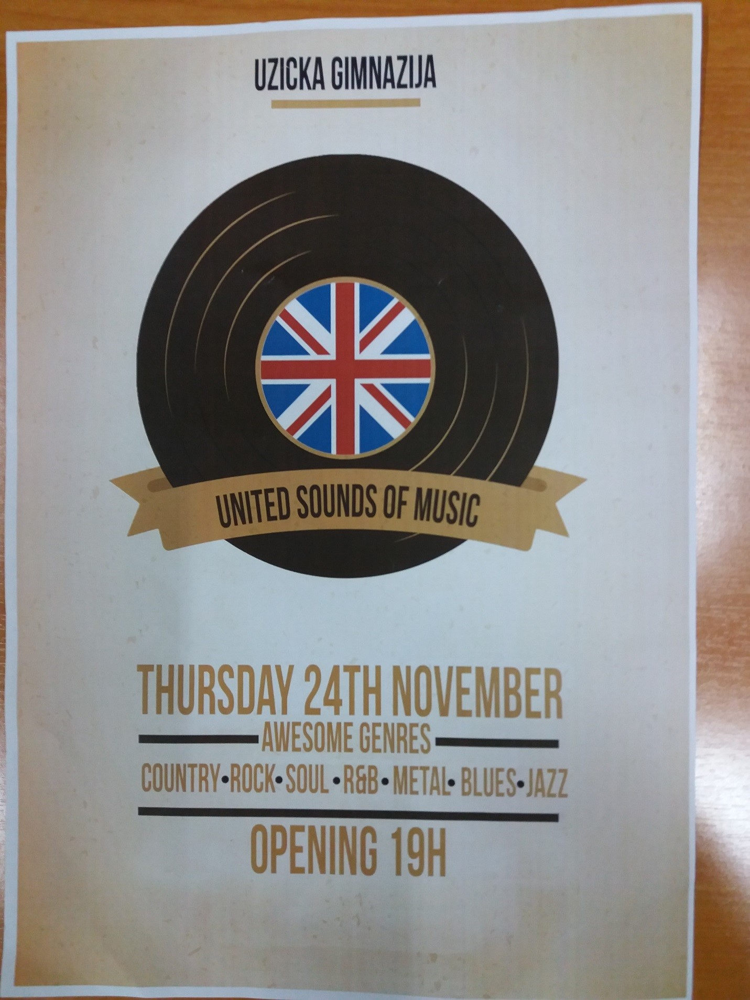
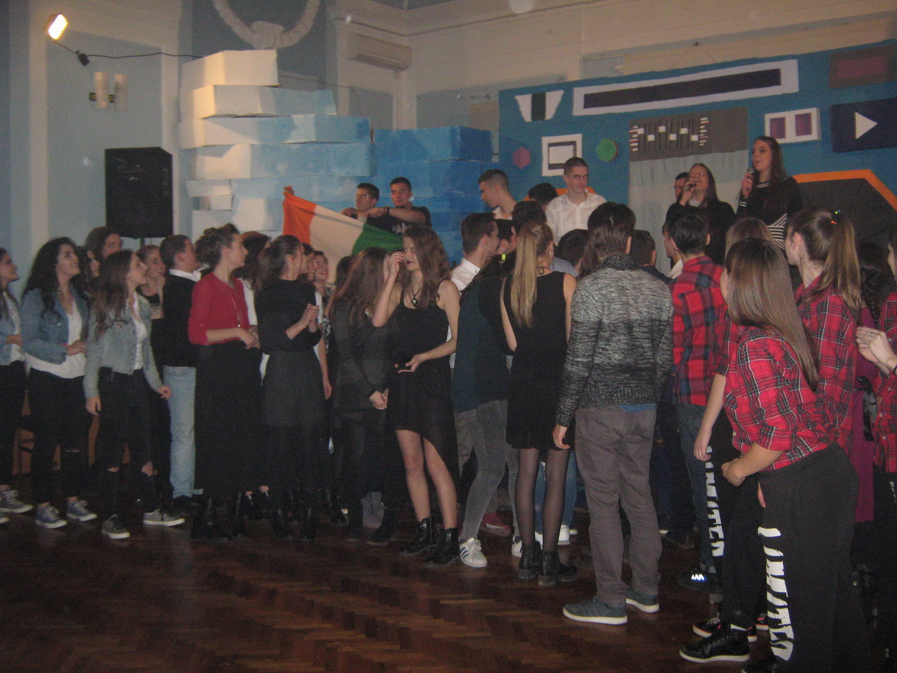
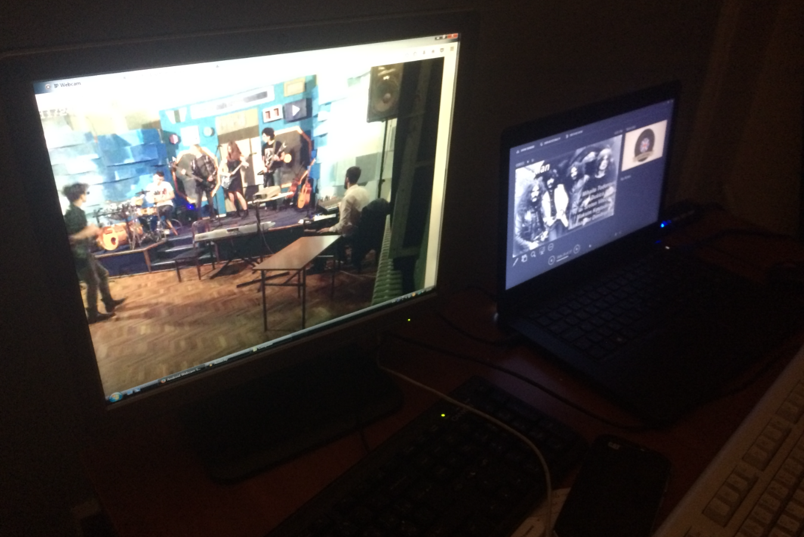

Copyright©
Tomislav Bakic 2016.
The thirteenth English Show in Uzice Grammar School held on 24 November, 2016 definitely moved the boundaries of all previous shows, at least in the number of participating students. About 60 of them worked hard for about two months as singers, players, designers of stage, poster, invitations… genre clips producers, technical support, choir singers, coordinating everything themselves with minimal supervision of their teachers. The organisation was at a high level, with some professional touches and great technological help. Not everyone who wished to watch this show was able to enter this small venue for the event of such proportions!
This project was a remarkable opportunity to express creativity and push the boundaries. We made something that this school has never seen before. Designing the stage was easy comparing to the building process. Despite that we had an incredible time doing both. Being a part of this project made me very proud. I'm glad to be able to have something like this to look back to when I finish high school. Quite an experience!

Since the beginning we wanted to make a “serious” show that will be remembered. We planned it carefully and we stuck to it. When we started, there weren't many people but as the time passed number increased. In November we started the scenography and we already had a plan, which Jelena and I already made. School helped us a lot and gave us the materials. We spent every day in the school making the setup for it. The show was awesome. The stage was great, people filled the room, and musicians were awesome. The winners were metal heads with song Iron man. Special thanks to our technical support, Prosa , Kojo and Ziljo. I'd like to say thanks to everyone, especially members of jury and all the competitors for great night.

After 15 minutes of voting and show part of the program jury decided! The winners of the United Sounds of music were "Short of time" with the song Ironman
The atmosphere was electric and the air was thick with love and excitement. Whole event was incredibly well-organized. There were 12 groups representing 12 different genres of music. Between their performances we were able to watch short clips about the following genre, and it made the time between watching artists even more enjoyable. The crowd was truly ready to party, the vibe was amazing! Three members of jury announced the winner. The best part of that night was when all groups came out on the stage and started celebrating. Everyone was so happy and it didn’t matter who the winner was because everyone had a great time! They were having so much fun so that we, in the audience, wanted to join them on the dance floor. Once again, the night was a total success and we are looking forward to the next one!

When it comes to the technical side of this event, it was no walk in the park. This time it was different than any other even so far. It was the first event where the tech team was set behind the scene, which created additional problems for us but was a great improvement to the overall appearance. One of my jobs was creating a short video for each of the twelve genres and displaying them before performances. At first it seemed rather simple, but it turns out it’s not that easy to represent an entire genre with three songs. Another problem was staying synchronized with all the musicians even during the unanticipated events such as improvised song parts and prolonged performances. Luckily, we were able to make everything work and, in the end, I can safely say that, with this competition, we took things to a new level!
Throughout the night there was a PP presentation running. Me and my buddy Alexa were in charge of that. We made the presentation that contained various videos and images that were relevant to the thing that was happening on the stage. It took a lot of time to make it right, and a lot of practice to master timing the slides. In the end the practice and the hard work paid off and it was truly a one of a kind experience for the whole crew and I’m sure the audience felt the same.
I was one of the participants in this show. Me and my friends were singing a song from Jessie J “Wild”. I’m very satisfied because the most important part of the preparations for the show was the process itself, which was very productive, and we helped each other in all sections, we became closer and I met many new friends. I’m looking forward to participating in new projects like this!

I had a lot of fun hosting United Sounds of Music and I also got a lot out of that experience. I enjoyed everything from our rehearsals to the actual show. It was amazing.

I was very excited to participate in the show. Since I'm a freshman this was a great chance to present my band "Kratki sa vremenom" ("Short of time") to the whole school. As soon as we walked on stage we felt like we were born for it. Everyone was screaming, everybody loved us. I'm looking forward to more shows of this kind, who knows where we can end up.